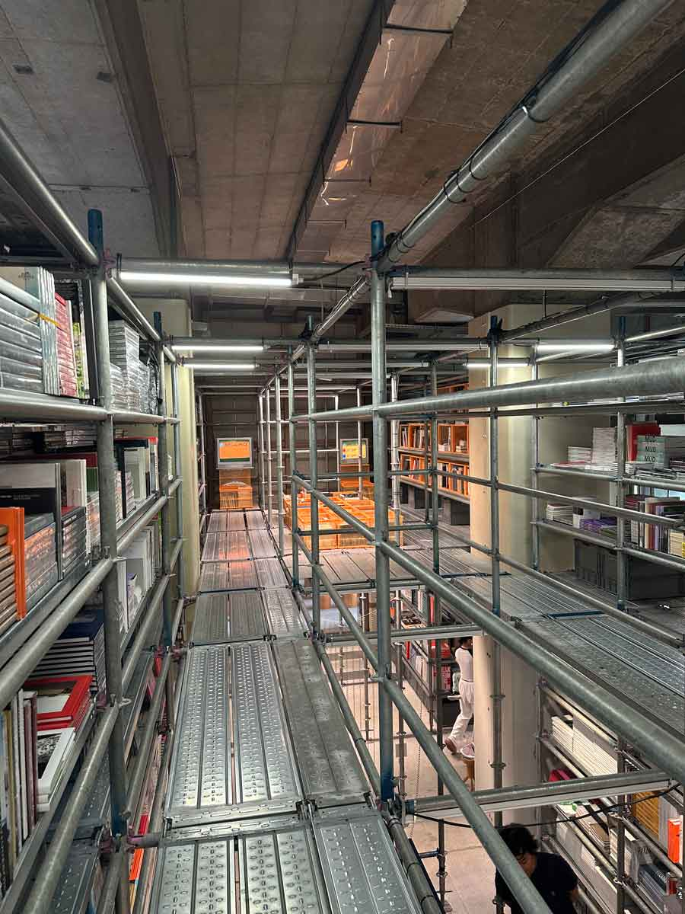
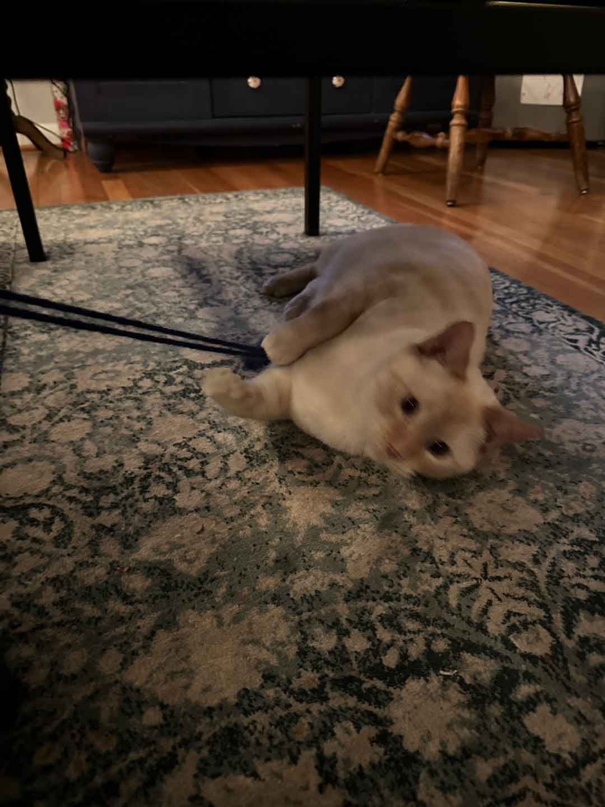
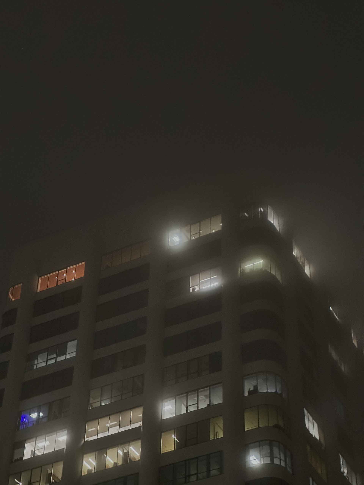
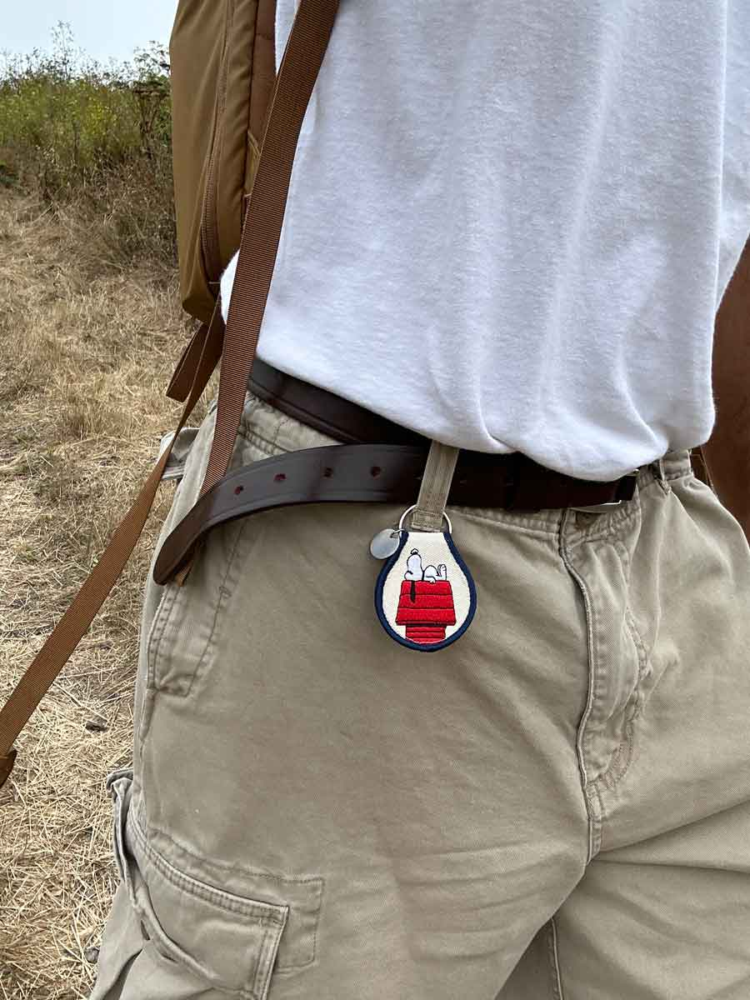

I’m a designer, engineer, and lifelong learner.
I studied Computer Science at the University of Maryland. I've been tinkering, designing, and coding
since 6th grade, when I first learned Python and Swift.
In my free time, you'll find me:
- Listening to music
- Exploring someplace new
- Flipping through my book & zine collection
MUSIC
Some favorite albums
RELIABLE DATA ATTRIBUTES
We ranked the data attributes that are most likely to be accurate and only used the ones we felt were integral to the user experience.
EXPLORING
A few memorable snapshots




LITERARY COLLECTION
A few highlights
RELIABLE DATA ATTRIBUTES
We ranked the data attributes that are most likely to be accurate and only used the ones we felt were integral to the user experience.